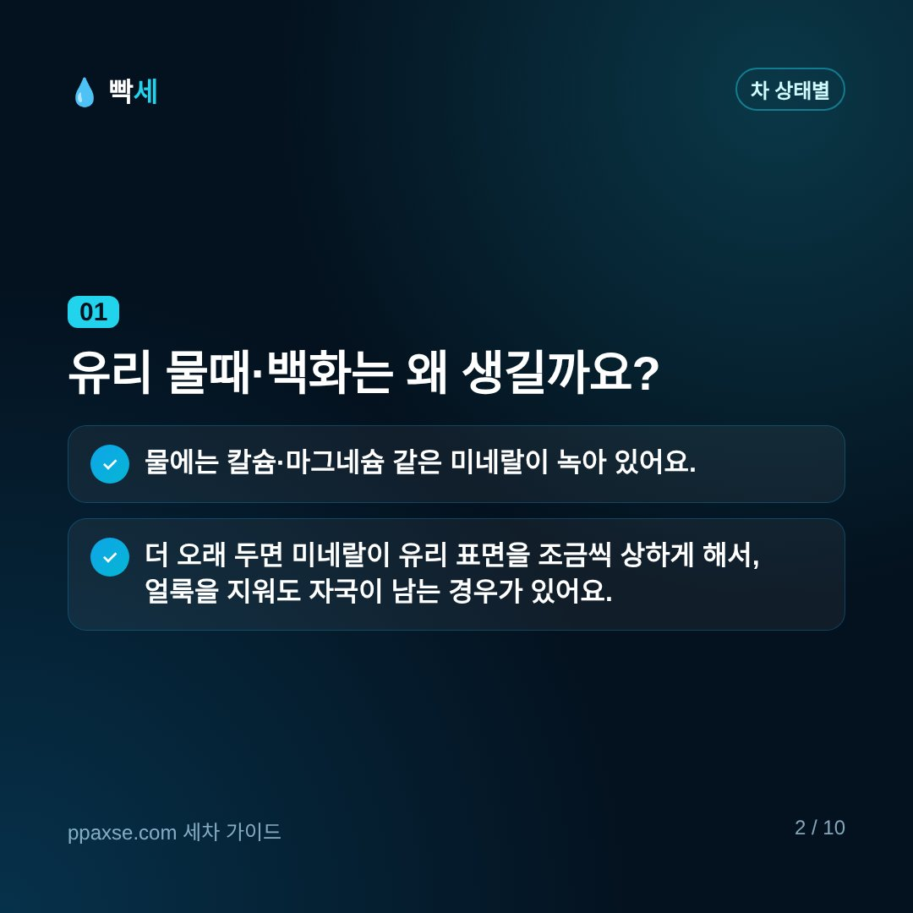
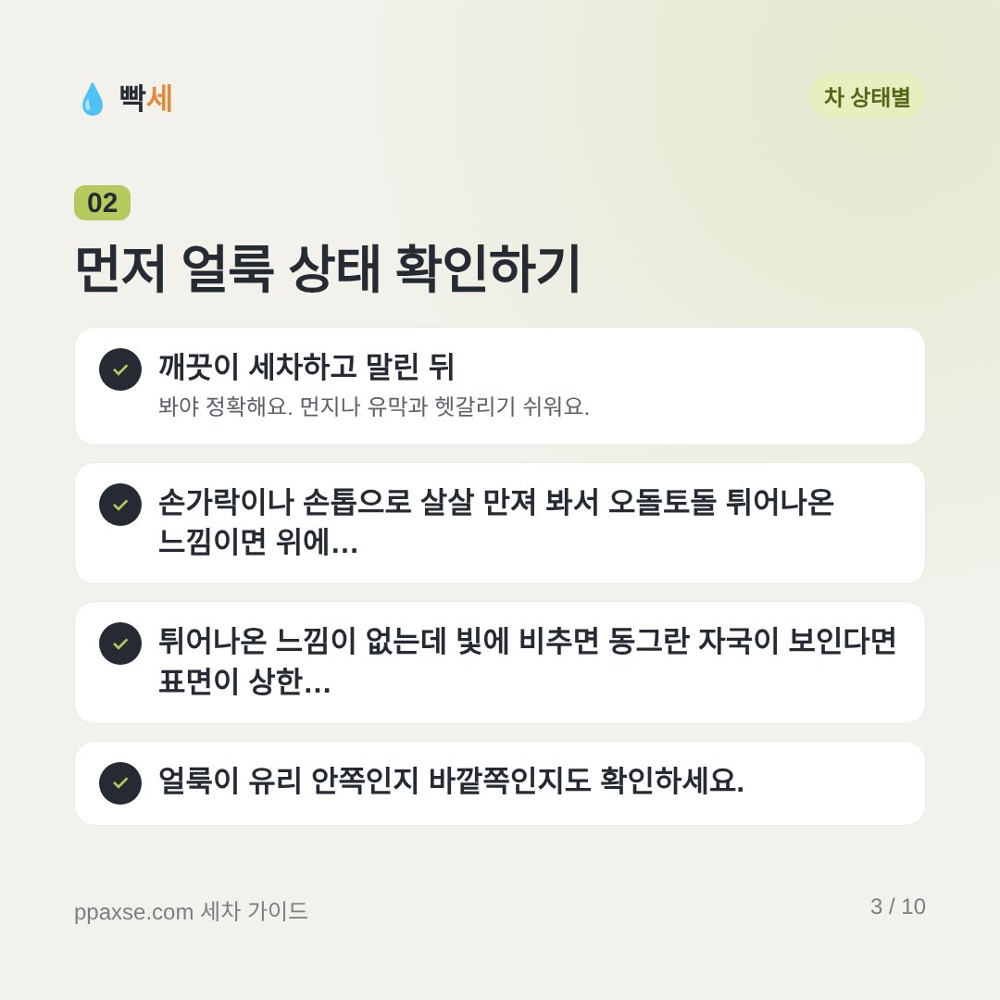
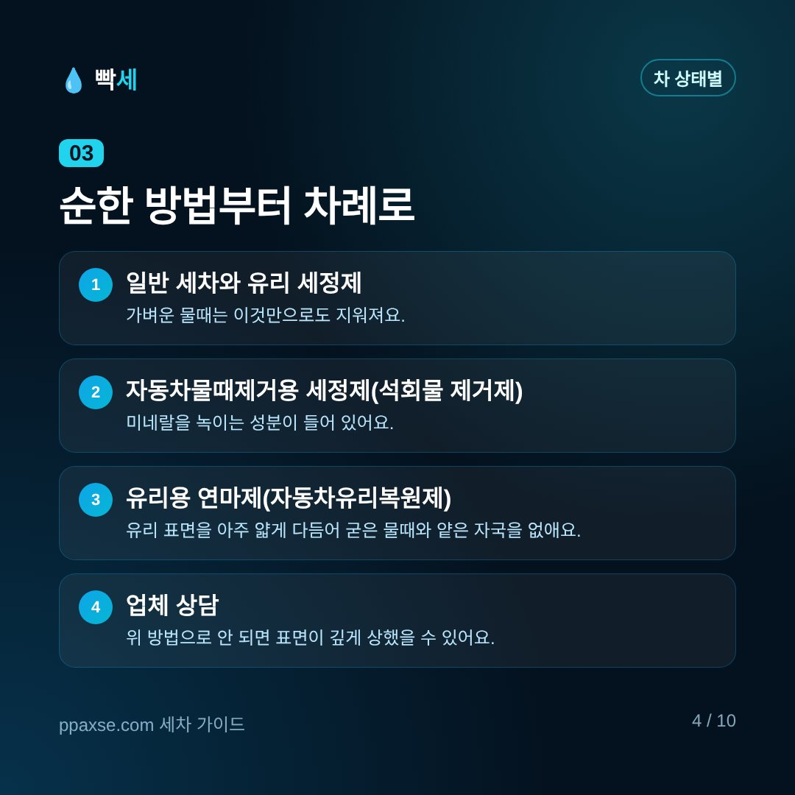
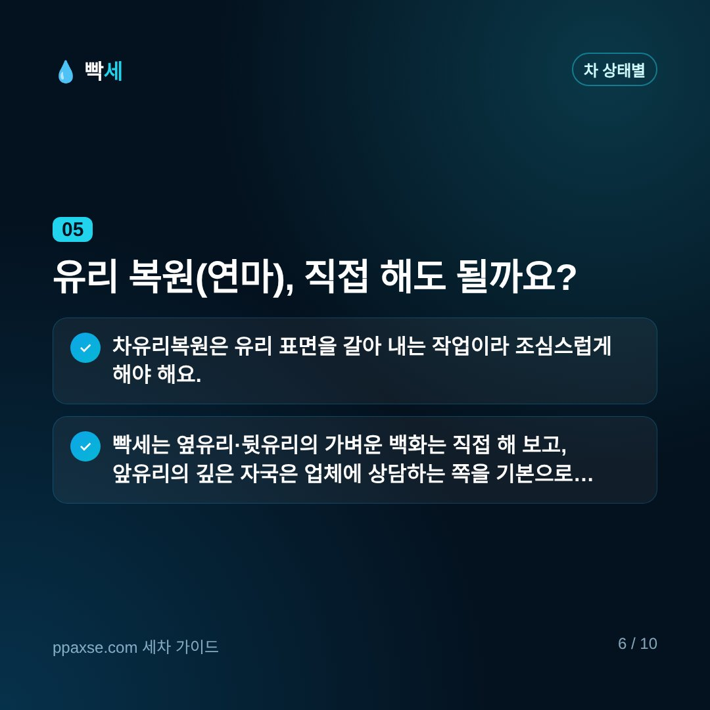
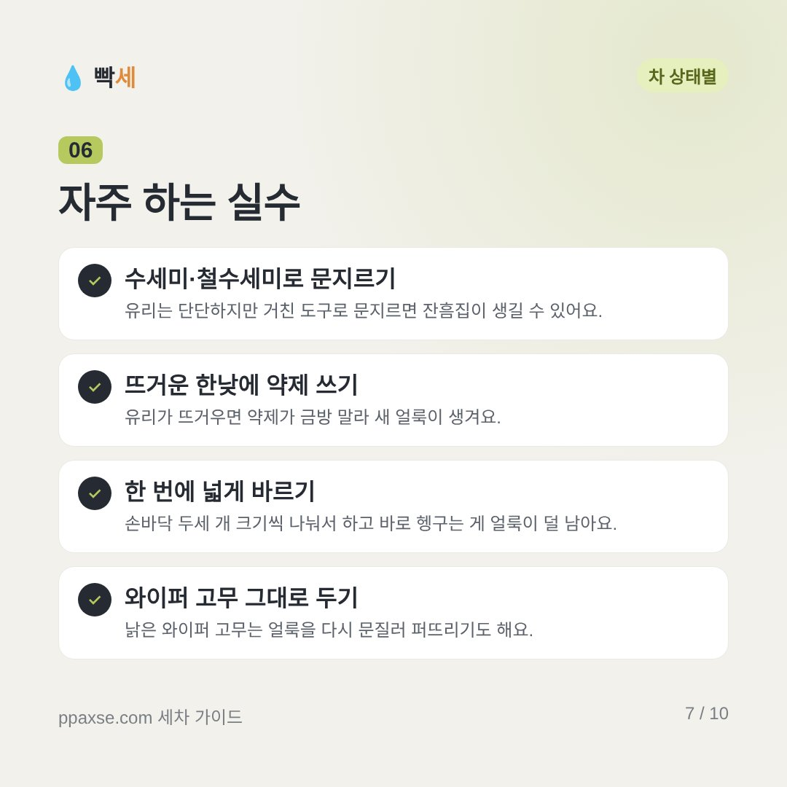
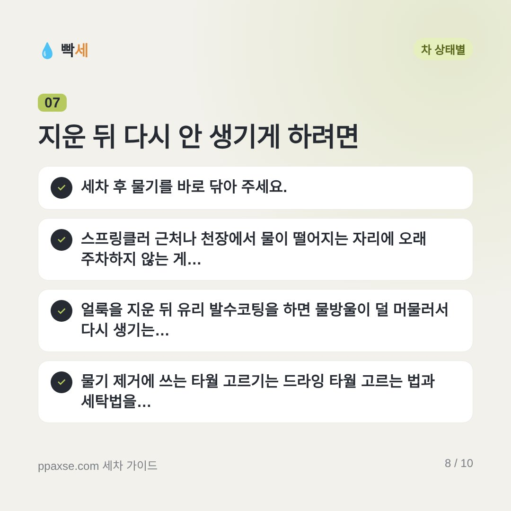

자동차 유리 물때·백화 제거 — 오래된 얼룩이 안 지워질 때
세차를 해도 유리에 하얀 동그라미 얼룩이 그대로 남는다면, 물 속 미네랄(석회 성분)이 유리 표면에 굳어 붙은 물때일 가능성이 커요. 흔히 '백화'라고도 불러요. 이런 얼룩은 순한 방법부터 한 단계씩 올려 가며 지우는 게 기본이에요. 처음부터 강한 약제를 쓰면 유리 주변 고무·도장·트림이 상할 수 있어서예요.
막 생긴 물자국을 줄이는 법은 세차 후 물자국(워터스팟)에, 앞유리 유막과 발수코팅은 유막제거·발수코팅 셀프로 하는 법에 따로 정리했어요. 이 글은 이미 오래 굳어서 잘 안 지워지는 얼룩에 집중했어요.
유리 물때·백화는 왜 생길까요?

물에는 칼슘·마그네슘 같은 미네랄이 녹아 있어요. 물방울이 유리 위에서 마르면 물은 날아가고 미네랄만 남아요. 처음에는 가볍게 닦이지만, 같은 자리에 물이 마르기를 반복하거나 햇볕에 뜨겁게 데워지면 미네랄이 점점 단단하게 붙어요. 스프링클러 물, 지하주차장 천장에서 떨어지는 물, 빗물을 자주 맞는 옆유리에 특히 잘 생겨요.
더 오래 두면 미네랄이 유리 표면을 조금씩 상하게 해서, 얼룩을 지워도 자국이 남는 경우가 있어요. 이건 표면이 패인 것이라 약제로는 안 지워지고 연마가 필요해요.
먼저 얼룩 상태 확인하기

- 깨끗이 세차하고 말린 뒤 봐야 정확해요. 먼지나 유막과 헷갈리기 쉬워요.
- 손가락이나 손톱으로 살살 만져 봐서 오돌토돌 튀어나온 느낌이면 위에 쌓인 물때일 가능성이 커요.
- 튀어나온 느낌이 없는데 빛에 비추면 동그란 자국이 보인다면 표면이 상한 것일 수 있어요.
- 얼룩이 유리 안쪽인지 바깥쪽인지도 확인하세요. 안쪽 얼룩은 실내 습기나 손자국일 수 있어요.
순한 방법부터 차례로

많은 분들이 쓰는 순서는 아래와 같아요. 앞 단계에서 지워지면 다음 단계로 갈 필요가 없어요.
- 일반 세차와 유리 세정제 — 가벼운 물때는 이것만으로도 지워져요.
- 자동차물때제거용 세정제(석회물 제거제) — 미네랄을 녹이는 성분이 들어 있어요. 자동차 석회물 제거용으로 나온 제품을 쓰고, 제품 설명서의 사용 시간과 방법을 지키세요.
- 유리용 연마제(자동차유리복원제) — 유리 표면을 아주 얇게 다듬어 굳은 물때와 얕은 자국을 없애요. 손으로 하는 제품도 있고, 광택기를 쓰는 방법도 있어요.
- 업체 상담 — 위 방법으로 안 되면 표면이 깊게 상했을 수 있어요. 디테일링샵에 유리 복원이 가능한지 물어보세요.
백화제거제(산성 약제) 쓸 때 꼭 지킬 것
백화제거제 중에는 산성 성분이 들어 있어 세정력이 강한 제품이 많아요. 그만큼 조심해야 할 점도 많아요.
- 유리에만 쓰세요. 도장면, 고무몰딩, 크롬·무광 트림, 휠에 묻으면 얼룩이나 변색이 생길 수 있어요. 주변을 마스킹 테이프나 타월로 가리고 하는 분들이 많아요.
- 그늘에서, 유리가 식은 상태로 하세요. 약제가 빨리 마르면 새 얼룩이 생길 수 있어요.
- 오래 두지 마세요. 설명서에 적힌 시간만 두고 바로 충분히 헹구세요.
- 장갑과 보안경을 쓰는 게 좋아요. 바람 부는 날엔 얼굴 쪽으로 날리지 않게 하세요.
- 다른 세제와 섞지 마세요. 특히 염소계 표백제와 산성 약제를 섞으면 위험한 기체가 생길 수 있어요.
- 틴팅(선팅) 필름은 대부분 유리 안쪽에 붙어 있지만, 바깥쪽 작업 중 약제가 안쪽으로 흘러들지 않게 문을 닫고 하세요.
유리 복원(연마), 직접 해도 될까요?

차유리복원은 유리 표면을 갈아 내는 작업이라 조심스럽게 해야 해요. 손으로 하는 유리 복원제는 비교적 부담이 적지만, 광택기를 쓰면 한곳에 오래 대지 않도록 주의해야 해요. 열이 나면 유리에 무리가 갈 수 있어요. 특히 앞유리는 운전 시야와 바로 이어지는 곳이라, 고르지 않게 갈리면 빛이 일그러져 보일 수 있어요.
빡세는 옆유리·뒷유리의 가벼운 백화는 직접 해 보고, 앞유리의 깊은 자국은 업체에 상담하는 쪽을 기본으로 권해요. 장비와 경험이 있는 분들은 앞유리도 직접 하기도 하니, 정답이라기보다 빡세가 생각하는 해답에 가까워요. 또 앞유리에 금이나 깊은 돌 자국이 있다면 연마보다 유리 점검이 먼저예요.
자주 하는 실수

- 수세미·철수세미로 문지르기 — 유리는 단단하지만 거친 도구로 문지르면 잔흠집이 생길 수 있어요. 와이퍼가 지나갈 때마다 그 흠집이 빛에 번져 보여요.
- 뜨거운 한낮에 약제 쓰기 — 유리가 뜨거우면 약제가 금방 말라 새 얼룩이 생겨요.
- 한 번에 넓게 바르기 — 손바닥 두세 개 크기씩 나눠서 하고 바로 헹구는 게 얼룩이 덜 남아요.
- 와이퍼 고무 그대로 두기 — 낡은 와이퍼 고무는 얼룩을 다시 문질러 퍼뜨리기도 해요. 작업하는 김에 와이퍼 상태도 봐 주세요.
지운 뒤 다시 안 생기게 하려면

- 세차 후 물기를 바로 닦아 주세요. 물방울이 마를 틈을 주지 않는 게 가장 효과적이에요.
- 스프링클러 근처나 천장에서 물이 떨어지는 자리에 오래 주차하지 않는 게 좋아요.
- 얼룩을 지운 뒤 유리 발수코팅을 하면 물방울이 덜 머물러서 다시 생기는 걸 늦출 수 있어요. 다만 코팅 위에도 물때는 생길 수 있어서, 물기 제거는 계속 챙겨 주세요.
- 물기 제거에 쓰는 타월 고르기는 드라잉 타월 고르는 법과 세탁법을 참고하세요.
유리 관리하기 좋은 세차장 찾기
물때를 지우려면 그늘진 실내 베이와 충분한 헹굼물이 있는 세차장이 편해요. 유리 복원을 하는 디테일링샵도 지역마다 있어요. 빡세 지도의 지역별 세차장 모음에서 우리 동네 세차장을 찾아보세요. 다녀온 곳에 실내 베이가 있었는지, 개인 약제를 써도 되는지 한마디로 남겨 주시면 다른 분들께 큰 도움이 돼요.
셀프세차·노터치·손세차를 종류별로 골라 보고, 폼건·온수·하부세차 같은 시설 정보도 확인할 수 있어요.
🗺️ 세차장 지도 열기✏️ 자주 가는 세차장에 한마디 남기기🎁 한마디를 남기면 가입 없이도 매주 기프티콘 추첨에 응모돼요.